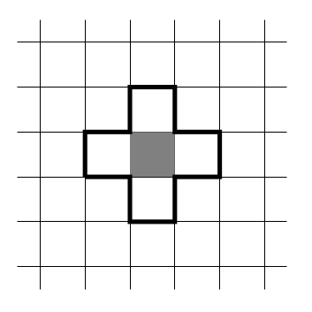
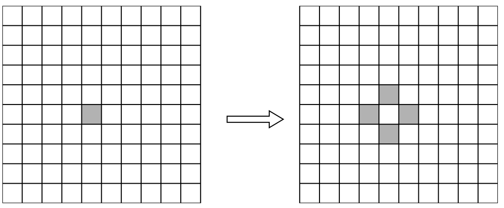

In the 1940's, John Von Neumann and Stanislaw Ulam wanted to design a computer able to self-repair itself. In the real world an object can be produced only from a more complex object, suppose you want to replicated a piece of paper. In order to create one you need to have a more complex object, a printer. The printer is a much more complex system than the paper, and in order to create a printer, you need a lot of smaller components which are themselves complex and so on. However, this is not what we happens in nature, cells are capable of self-replicating and self-repairing. So, scientists contemplated the idea of creating a system that has such capabilities.
Tackling such a problem is not easy, so scientists decided to simplify the problem.
How to find the logical mechanisms for self-reproduction?
Finding an algorithm to acheive transcription and translation would be a great start, it would also be easier to
formalize these concept in a descrete world.
This is when the idea of cellular automata was born.
A cellular automata is a mathematical abstraction of the real world, a modeling framework in which everything is
discrete.
There are many examples of cellular automata, in this blog we will be looking at two examples, both use a square
lattice (a grid).
Although the square lattice is the most common, it is possible to use a hexagonal lattice, a triangular lattice or
even a
three dimensional lattice (a cube).
It is also possible to make a simpler automaton, for example, a one dimensional automaton.
Take a look at wolfram's automata.
In the first example we will be looking at an automaton (i.e. a specific cellular automata) that uses the parity
rule.
Here a cell has only two states, dead or alive (0 or 1), a dead cell is a white cell, an alive cell is a black cell.
Each cell sums up the states of its four neighbors (up, down, left, right).
If the sum is even, the new state of the cell is 0, otherwise it is 1.
Each cell sums up the states of its four neighbors, you can see the neighboring cells in the image. These are the four white cells that have a black border.
If we start with only one cell alive, the next generation will look like so

Implementing the rule is pretty simple for the inner cells, but what about the cells on the edge?
How do we handle the cells that don't have four neighbors?
There are many ways to handle such cells (boundary conditions).
It is relatively easy to create a cellular automata in p5.js.